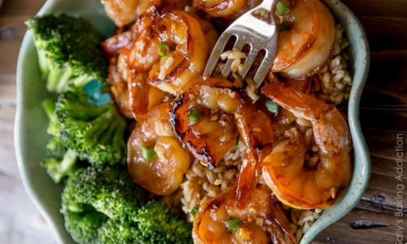

20 Minute Honey Garlic Shrimp
This 20 minute honey garlic shrimp is a reader favorite recipe. It's extra quick, very simple,
and delivers big flavor. Served with brown rice and vegetables or served over a salad, this
healthy dish is sure to join your regular dinner rotation.
Recipe Credit:
sallysbakingaddiction.com
Ingredients
- 1/3 cup honey
- 1/4 cup soy sauce
- 2 garlic cloves, minced
- 1 tsp fresh ginger, minced (optional)
- 1 lb medium uncooked shrimp, peeled & deveined
- 2 tsp olive oil
- chopped green onion (optional, for garnish)
Directions
- Whisk the honey, soy sauce, garlic, and ginger ( is using) together in a medium bowl. You
will use half for the marinade in step 2, and half for cooking the shrimp in step 3.
- Place shrimp in a large sealable container or zipped-top bag. Pour 1/2 of the
marinade/sauce mixture on top, give it all a shake or stir, then allow shrimp to marinate
in the refrigerator for 15 minutes or for up to 12 hours. Cover and refrigerate the rest
of the marinade for step 3.
- Heat olive oil in a skillet over medium-high heat. Place shrimp in the skillet. (Discard
used marinade.) Cook shrimp on one side until pink, about 45 seconds, then flip shrimp
over. Pour in remaining marinade/sauce and cook it all until shrimp is cooked through, about
1-2 more minutes.
- Serve shrimp with brown rice and steamed vegetables, or over a salad.
Notes
- If you want a thicker sauce, mix 1 tsp cornstarch with 1 tsp warm water and stir into the
sauce before using it in step 3.